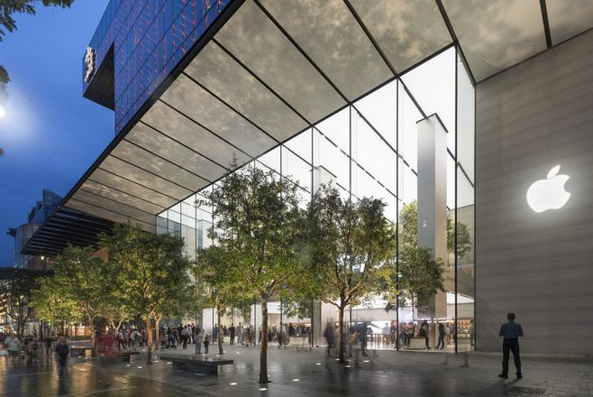
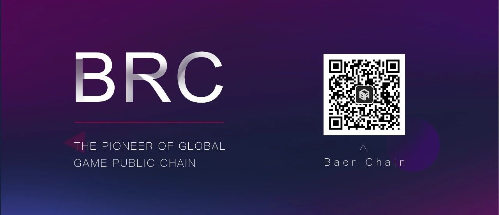

人类社会已经步入从信息互联到价值互联变革的关键时刻，日新月异的区块链行业即将到达真正爆发的奇点。 Baer Labs致力于区块链行业最前沿的分析解读，让我们一起理解变革的趋势，抓住变革的红利。
Baer Labs丨史上最贵巴菲特午餐的剧本是什么？
2019/6/5
1
最近，一顿史上最贵的午餐上了热搜：巴菲特20周年慈善午宴，竞拍价打破历史最高纪录，达到456万美元（约人民币3154万元），而这次吸引眼球的不仅是价格贵，还和区块链有关。
而有趣的是，一直以来，巴菲特都是坚定的加密数字资产反对者。毕竟这样的超级富豪，稳定安全才是考虑的核心要素。
2
价值投资：在能力圈范围内，寻找内在价值相当于交易价格具有显著安全边际的资产，找到后重仓买入并长期持有。
作为巴菲特一以贯之的投资理念，“低价买入优质资产”说起来十分简单，再加之也许是曾经在航空业栽过跟头所获得的经验，“看不懂”就不动的确是这位顶级富豪的最佳投资策略。
“处于第四次工业革命风口的区块链，是一种颠覆性的技术，有望打造“价值互联网”推动全球经济体系，实现技术、组织以及效率变革。”我们对区块链的未来无比笃信，也难免对大佬们的无动于衷感到难以置信。
而事实上，这些必然到来的未来，大佬们真不需要关注，不需要“看懂”，更不会听别人安利，毕竟，已经在趋势之巅的超级富豪，不再需要“弯道超车”。
3
同时，等到“看懂”时，大佬发车可是分分钟的事：
早年，巴菲特一贯保持“不投资科技股”的原则，尤其是对乔布斯时代苹果的“不看好”，其实不是不看好科技发展，而只是对不确定性风险的厌恶；直到2016年，巴菲特旗下的投资公司伯克希尔哈撒韦公司才开始大举建仓苹果。截至2019年一季度，伯克希尔哈撒韦公司已持有苹果公司约474亿美元的股票，排在其投资组合的首位。

“这是一家令人难以置信的公司”，从“看不懂科技股”到成苹果公司第二大股东，对普通人是难以想象的转变，而对于巴菲特来说，也许只不过是收益大于风险后的必然。
随着区块链技术应用的不断落地，加密货币也将创建更为广泛的去中心化应用网络，实现其真正的内在价值。到那时，相信巴菲特对加密货币的投资态度，就像喝到樱桃可乐一样分分钟就改变。

